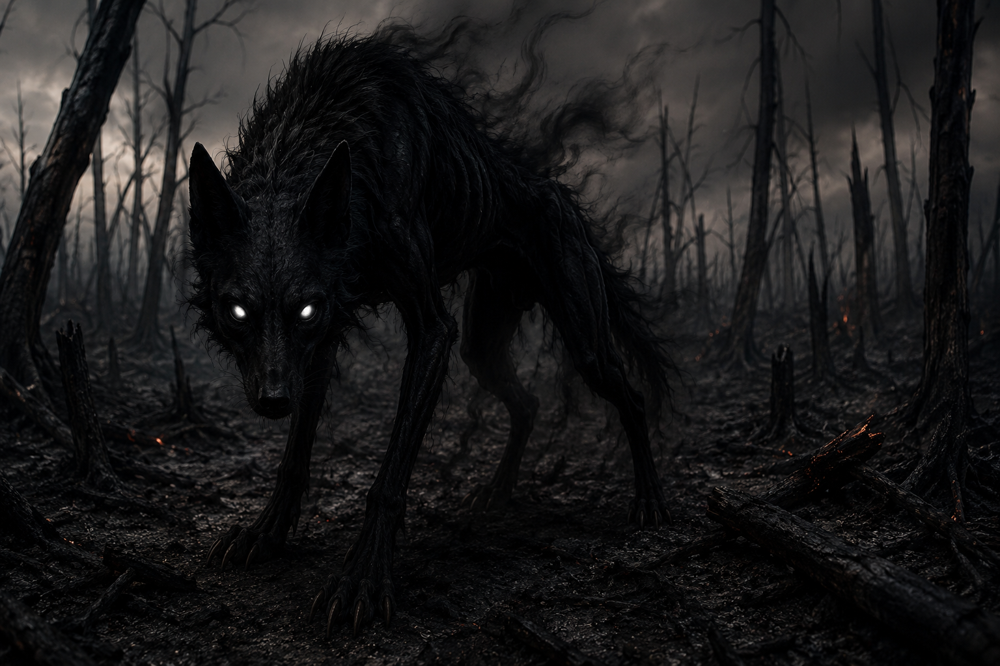

Uma criatura sombria conhecida como Umbrafang, o lobo das sombras eternas. Seu corpo negro parece feito de fumaça viva, enquanto seus olhos brancos brilham na escuridão como almas perdidas. Silencioso e mortal, ele caça em florestas queimadas, alimentando-se do medo de suas vítimas.